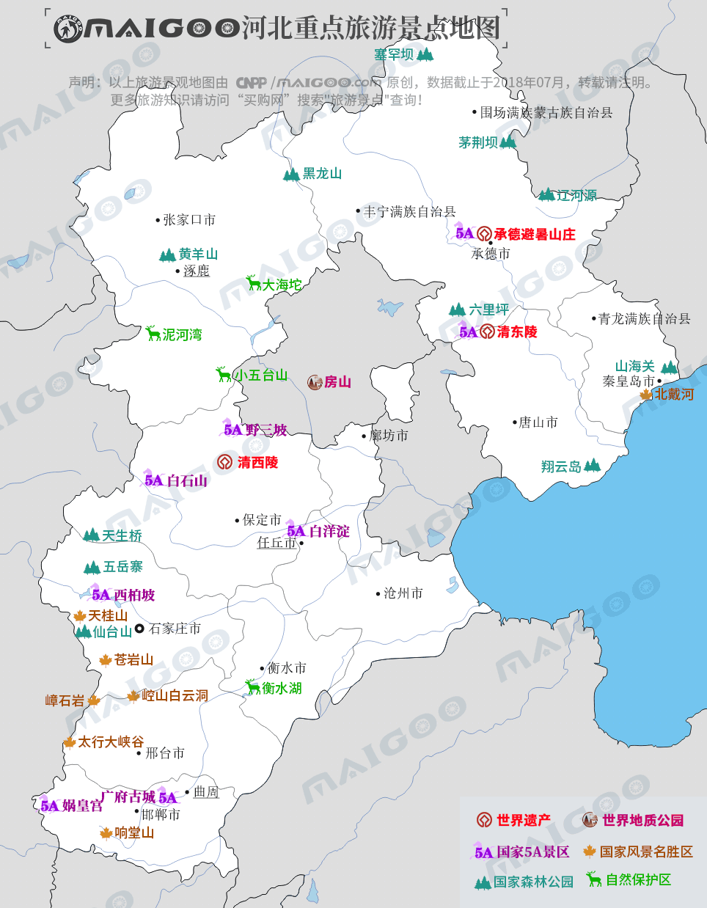

| | | | | |
| - | - | - | - | - |
|<b>别名</b>|燕赵、冀州、直隶||<b>著名景点</b>|大慈阁、北戴河、清东陵、白洋淀、避暑山庄、西柏坡、山海关|
|<b>行政区类别</b>|省级行政区||<b>机 场</b>|石家庄正定机场、秦皇岛北戴河机场、邯郸机场、山海关机场等|
|<b>所属地区</b>|华北地区||<b>火车站</b>|石家庄站、唐山站、保定站、秦皇岛站、山海关站、邯郸站等|
|<b>下辖地区</b>|11个地级市||<b>车牌代码</b>|冀A/B/C/D/E/F/G/H/J/R/T|
|<b>电话区号</b>|（+86）0310至0319/（+86）0335||<b>GDP</b>|35964.0亿元（2017年）|
|<b>邮政区码</b>|050011||<b>人均GDP</b>|47827元|
|<b>地理位置</b>|太行山以东，渤海以西||<b>著名高校</b>|燕山大学、河北大学、NEUQ等|
|<b>面 积</b>|18.88万平方千米||<b>国家级新区</b>|雄安新区|
|<b>人 口</b>|7519.52万人（2017年）||<b>省委书记</b>|王东峰|
|<b>方 言</b>|北京官话、冀鲁官话、东北官话、晋语||<b>省 长</b>|许勤|
|<b>气候条件</b>|温带大陆性季风气候||-|-|
| <b>河北生活文化</b> | <b>河北特色文化</b> | <b>河北曲艺文化</b> | <b>河北建筑文化</b> | <b>河北宗教文化</b> |
| - | - | - | - | - |
| <a href="javascript:;" onclick="live(this);">习俗/民俗</a> | <a href="javascript:;" onclick="feature(this);">吴桥杂技</a> | <a href="javascript:;" onclick="art(this);">河北梆子</a> | <a href="javascript:;" onclick="building(this);">承德避暑山庄</a> | - |
| <a href="javascript:;" onclick="live(this);">方言文化</a> | <a href="javascript:;" onclick="feature(this);">滕氏布糊画</a> | <a href="javascript:;" onclick="art(this);">京东大鼓</a> | <a href="javascript:;" onclick="building(this);">赵州桥</a> | - |
| <a href="javascript:;" onclick="live(this);">节日文化</a> | - | <a href="javascript:;" onclick="art(this);">河北唐剧</a> | <a href="javascript:;" onclick="building(this);">维吾尔族民居</a> | - |
| <a href="javascript:;" onclick="live(this);">嫁娶文化</a> | - | <a href="javascript:;" onclick="art(this);">河北哈哈腔</a> |-|-|
| <a href="javascript:;" onclick="live(this);">饮食文化</a> | - | -|-|-|
| <a href="javascript:;" onclick="live(this);">河北禁忌</a> | - |-| -|-|
## <i class="fa fa-file-text-o"></i>&nbsp;目录（Table of Contents）
+ [I. 总路线图（参考"广东"）](guangdong.html)
+ [II. 景点](#two)
+ [III. 路线规划（参考"广东"）](guangdong.html)
<h2 id="two"><i class="fa fa-star-o"></i>&nbsp;景点</h2>
